MAXimal
добавлено: 2 Mar 2009 17:45
редактировано: 31 Dec 2011 1:57
Содержание [скрыть]
Покрытие путями ориентированного ациклического графа
Дан ориентированный ациклический граф  . Требуется покрыть его наименьшим числом путей, т.е. найти наименьшее по мощности множество непересекающихся по вершинам простых путей, таких, что каждая вершина принадлежит какому-либо пути.
. Требуется покрыть его наименьшим числом путей, т.е. найти наименьшее по мощности множество непересекающихся по вершинам простых путей, таких, что каждая вершина принадлежит какому-либо пути.
Сведение к двудольному графу
Пусть дан граф с  вершинами. Построим соответствующий ему двудольный граф
вершинами. Построим соответствующий ему двудольный граф  стандартным образом, т.е.: в каждой доле графа будет по вершин, обозначим их через 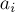 и 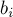 соответственно. Тогда для каждого ребра
стандартным образом, т.е.: в каждой доле графа будет по вершин, обозначим их через 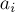 и 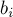 соответственно. Тогда для каждого ребра  исходного графа проведём соответствующее ребро 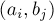.
исходного графа проведём соответствующее ребро 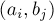.
Каждому ребру соответствует одно ребро , и наоборот. Если мы рассмотрим в любой путь 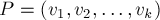, то ему ставится в соответствие набор рёбер 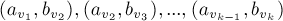.
Более просто для понимания будет, если мы добавим "обратные" рёбра, т.е. образуем граф 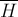 из графа добавлением рёбер вида 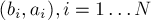. Тогда пути в графе будет соответствовать путь 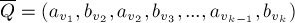.
Обратно, рассмотрим любой путь 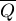 в графе , начинающийся в первой доле и заканчивающийся во второй доле. Очевидно, снова будет иметь вид , и ему можно поставить в соответствие в графе путь . Однако здесь есть одна тонкость: 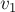 могло совпадать с 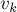, поэтому путь  получился бы циклом. Однако по условию граф ациклический, поэтому это вообще невозможно (это единственное место, где используется ацикличность графа ; тем не менее, на циклические графы описываемый здесь метод вообще нельзя обобщить).
получился бы циклом. Однако по условию граф ациклический, поэтому это вообще невозможно (это единственное место, где используется ацикличность графа ; тем не менее, на циклические графы описываемый здесь метод вообще нельзя обобщить).
Итак, всякому простому пути в графе , начинающемуся в первой доле и заканчивающемуся во второй, можно поставить в соответствие простой путь в графе , и наоборот. Но заметим, что такой путь в графе — это паросочетание в графе . Таким образом, любому пути из можно поставить в соответствие паросочетание в графе , и наоборот. Более того, непересекающимся путям в соответствуют непересекающиеся паросочетания в .
Последний шаг. Заметим, что чем больше путей есть в нашем наборе, тем меньше все эти пути содержат рёбер. А именно, если есть  непересекающихся путей, покрывающих все вершин графа, то они вместе содержат 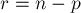 рёбер. Итак, чтобы минимизировать число путей, мы должны максимизировать число рёбер в них.
непересекающихся путей, покрывающих все вершин графа, то они вместе содержат 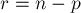 рёбер. Итак, чтобы минимизировать число путей, мы должны максимизировать число рёбер в них.
Итак, мы свели задачу к нахождению максимального паросочетания в двудольном графе . После нахождения этого паросочетания (см. Алгоритм Куна) мы должны преобразовать его в набор путей в (это делается тривиальным алгоритмом, неоднозначностей здесь не возникает). Некоторые вершины могут остаться ненасыщенными паросочетанием, в таком случае в ответ надо добавить пути нулевой длины из каждой из этих вершин.
Взвешенный случай
Взвешенный случай не сильно отличается от невзвешенного, просто в графе на рёбрах появляются веса, и требуется найти уже паросочетание наименьшего веса. Восстанавливая ответ аналогично невзвешенному случаю, мы получим покрытие графа наименьшим числом путей, а при равенстве — наименьшим по стоимости.